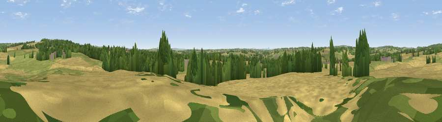

Viewpoint near Swynnerton
#35477 in England · top 60% of its area beats it · near SwynnertonWhere it is
The exact computed spot (SJ 83925 34275). Click the marker for map links.
The view, rendered

A 360° render of this exact spot computed from the terrain model, tree cover and land cover — summer colours, afternoon light, calibrated against photographs of famous viewpoints. Real trees, hedges and buildings will differ in detail.
The panorama
Grey silhouette: terrain skyline in each direction (720 bearings, Earth curvature and refraction included). Dashed green: skyline with trees (+15 m) and buildings (+8 m) as obstacles. Blue strip: how far the ground is visible on each bearing.
Where the view opens
Wedge length = distance to the farthest visible ground on that bearing (vegetation-aware). Rings at 10, 25 and 50 km.
What fills the view
50% cropland · 32% grassland · 16% woodland · 2% built-up
Angular shares of the visible panorama (visual magnitude), not map area. Landscape diversity 0.47 (0–1 Shannon).
Key numbers
More beautiful places nearby
The staircase of upgrades: each row has a higher view potential than everything closer. Driving times are estimates from straight-line distance, calibrated against real road routing — check an actual route before setting out.
| Place | Direction | Drive | Score |
|---|---|---|---|
| Viewpoint near Swynnerton | NNE · 2 km | ~6 min | 59.4 |
| Viewpoint near Beech | NNE · 5 km | ~11 min | 62.9 |
| Viewpoint near Madeley | NW · 13 km | ~23 min | 66.7 |
| Bignall Hill | N · 17 km | ~30 min | 75.2 |
| Viewpoint near Mow Cop | N · 23 km | ~38 min | 80.2 |
| Viewpoint near Little Wenlock | SW · 33 km | ~51 min | 84.2 |
| The Wrekin | SW · 34 km | ~52 min | 85.0 |
| Viewpoint near Little Wenlock | SW · 34 km | ~52 min | 86.6 |
52.90567, -2.24045 · source: screening · position refined by local search. Computed location — check access rights before visiting.